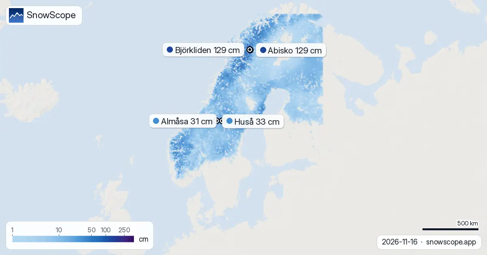
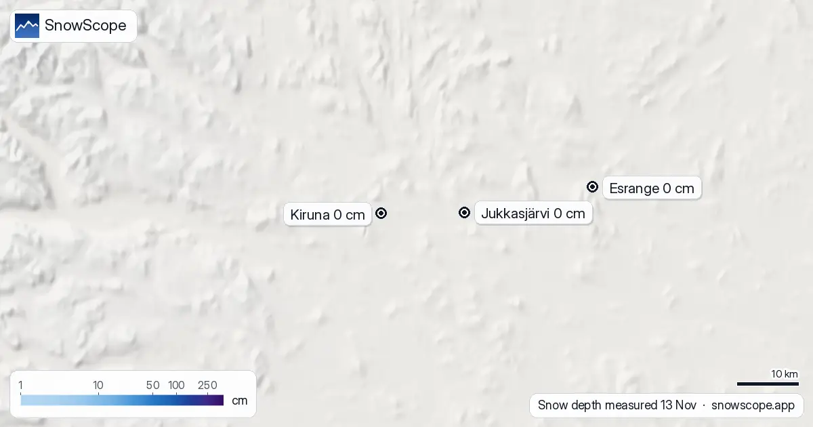

Is there snow in Sweden? Snow depth and new snow on 16 November 2026
The white area in Sweden stands at about 256,990 km² today, little changed from yesterday. That is 79 % of the high ground we map in Sweden.
See the live snow forecast for Abisko in the SnowScope appSnow depth, powder alerts and the 3D map, free.
How much of the country is white
Snow lies right down to the lowlands and the coast. Last week's 89,890 km² has grown by 167,100 km².
| Resort | Snow depth | New snow, 72 h | Coming, next days | Top |
|---|---|---|---|---|
| Abisko | 129 cm | 3 cm | 12 cm | 902 m |
| Björkliden | 129 cm | 3 cm | 12 cm | 933 m |
| Huså | 33 cm | 4 cm | 3 cm | 677 m |
| Almåsa | 31 cm | 3 cm | 3 cm | 702 m |
| Brantberget | 31 cm | 0 cm | 7 cm | 83 m |

Snow depth by height
Height makes the difference: 0-500 m: on average 8 cm (71 % of the ground white); 500-1,000 m: on average 14 cm (100 % of the ground white); 1,000-1,500 m: on average 42 cm (100 % of the ground white); 1,500-2,000 m: on average 68 cm (100 % of the ground white).
What it means on the slopes
The white area is growing, so more lifts and runs can open in the coming days if the cold holds.
With more snow in the forecast, the next days should improve things further.
Fresh snow
The Hemavan fjells got the most fresh snow over three days, up to 9 cm.
The last 24 hours alone brought up to 3 cm.
About 34,550 km² received at least 5 cm.
Snow on the way?
Expect up to 15 cm on the snowiest slopes by the third day; the seven-day total reaches 18 cm.
Wednesday 18 November stands out, with up to 11 cm in a day.
The second week adds up to 15 cm where it snows most.
Shortlist for the weekend
At the top of the list, Abisko reports 129 cm.
Then come Björkliden (129 cm), Huså (33 cm), Almåsa (31 cm) and Brantberget (31 cm).
Abisko picked up 3 cm in the last three days and could add 12 cm by Thursday 19 November.
At Björkliden: 3 cm of fresh snow over three days, 12 cm more expected by Thursday 19 November.
Count 59 white resorts out of 75 in Sweden today.
Tips for skiers
- Early-season snow is thin over rocks: ski the groomed runs first.
- Snow above the tree line can be wind-packed: watch the ridges.
- Fresh snow on a cold base sticks badly: take care on steep slopes.
About these numbers
Resort snow depths are the deepest snow on the resort's upper slopes from the SnowScope snow model (about 1 km, run of 16 November); they are estimates for an area, not a measurement at one point. Station values are measurements on the date shown. Forecasts can change. Always read the official avalanche bulletin before going off-piste.
Cite this report
For research, teaching or the press: the numbers and charts are free to reuse under CC BY 4.0 with this citation.
SnowScope (2026), Is there snow in Sweden? Snow depth and new snow on 16 November 2026, https://snowscope.app/blog/en/2026/11/sweden-snow-report-16-november-2026.html, accessed 2026-11-16
SnowScope (Atlas Labs). (2026, November 16). Is there snow in Sweden? Snow depth and new snow on 16 November 2026. SnowScope snow reports. https://snowscope.app/blog/en/2026/11/sweden-snow-report-16-november-2026.html
BibTeX
@misc{snowscope2026swedensnowreport16novemb,
author = {{SnowScope (Atlas Labs)}},
title = {Is there snow in Sweden? Snow depth and new snow on 16 November 2026},
year = {2026},
month = nov,
howpublished = {\url{https://snowscope.app/blog/en/2026/11/sweden-snow-report-16-november-2026.html}},
note = {Published 2026-11-16 20:42 UTC; accessed 2026-11-16}
}· CC BY 4.0 · Methods, data and tools →
Abisko: snow and temperature by height, this winter vs last (tools) →
Follow Abisko
Free: a message when fresh snow is coming, and the forecast every morning.
More snow reports

Kiruna dog sledding guide for winter 2026-27: the weather station in Kiruna measured 0 cm of snow on 13 November, operators listed by Kiruna Lapland with season and prices, short days, and the rules for your own dog on ski tracks, in reindeer land and in Abisko National Park.

Indy Base Pass $419, Indy+ $469, two days at each member area. We set it against checked December day prices at seven Indy areas, and their snow odds.

Idre Fjäll December skiing: 32 cm mid-mountain on a typical 15 December; 65 % of winters with 30 cm in mid-December, 76 % in Christmas week. Honest odds.